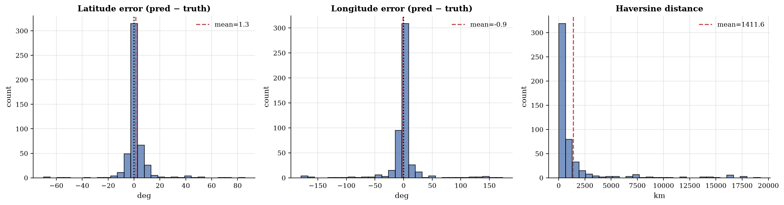
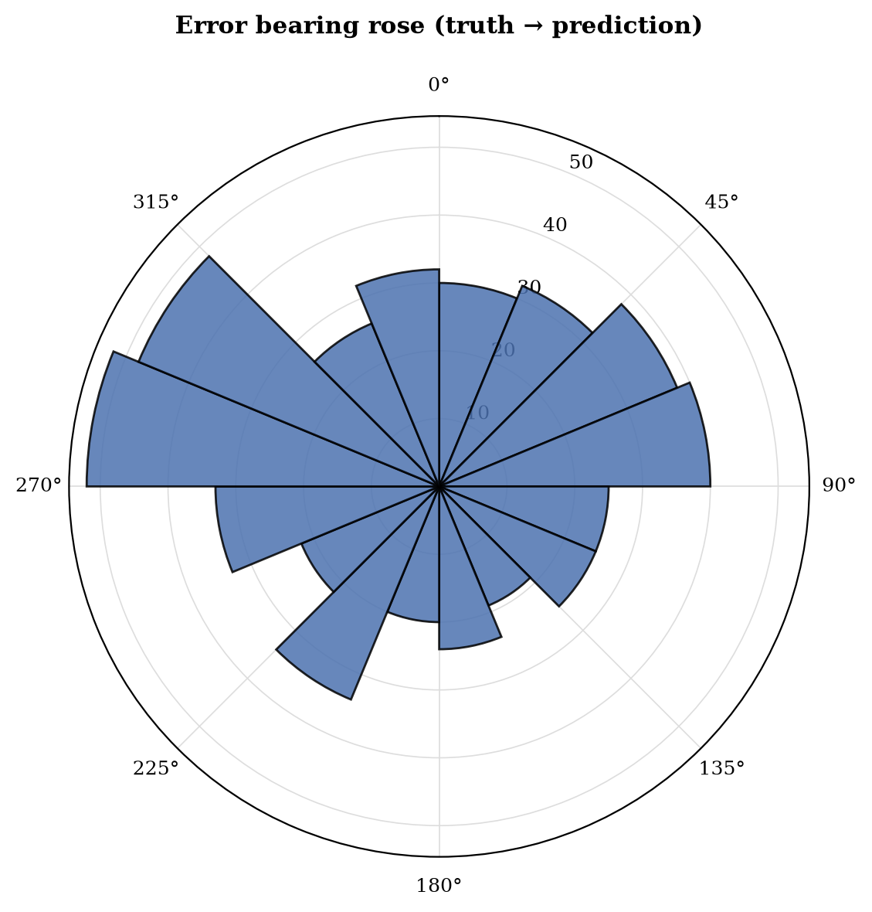
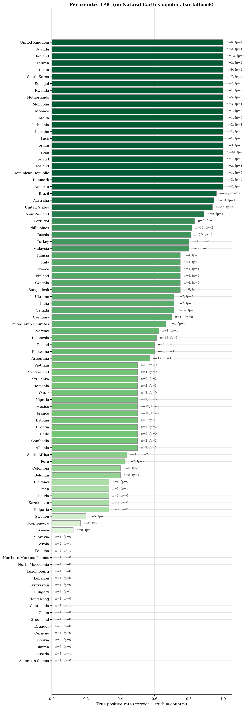
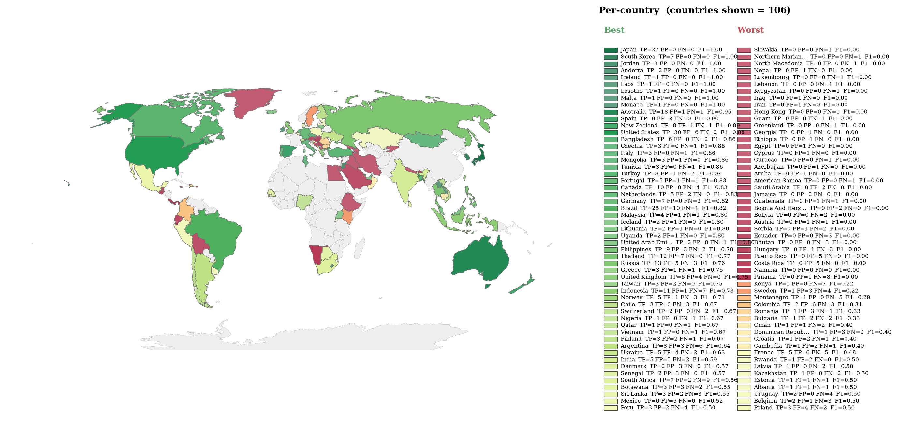
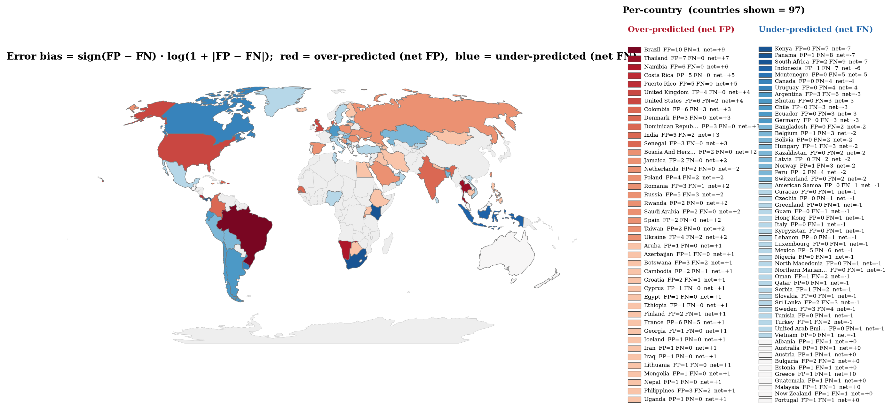
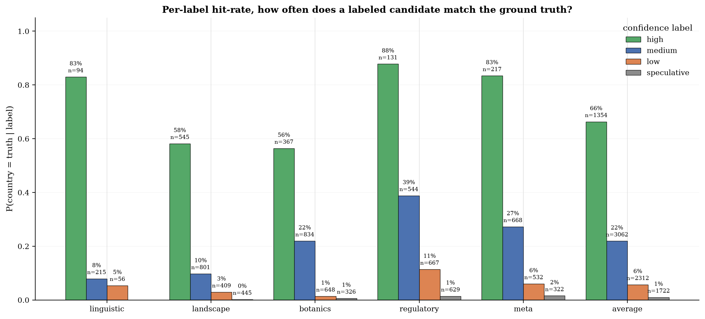
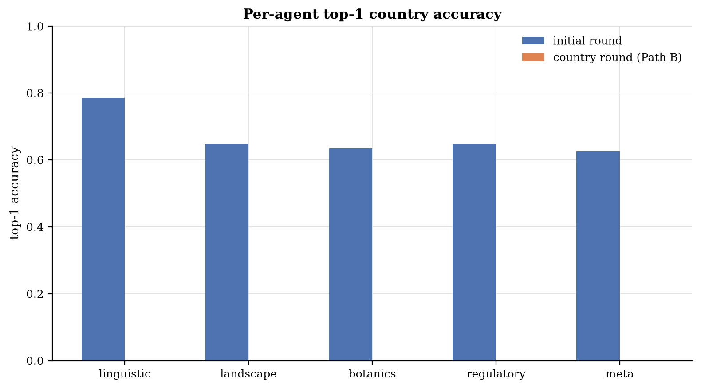
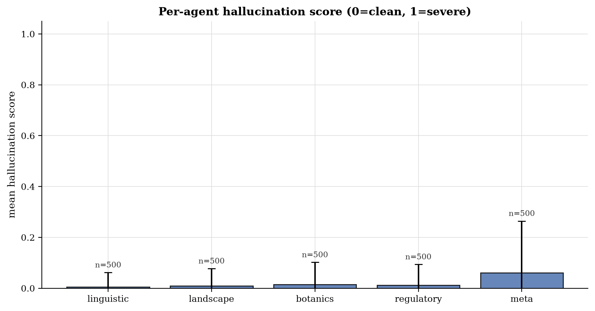
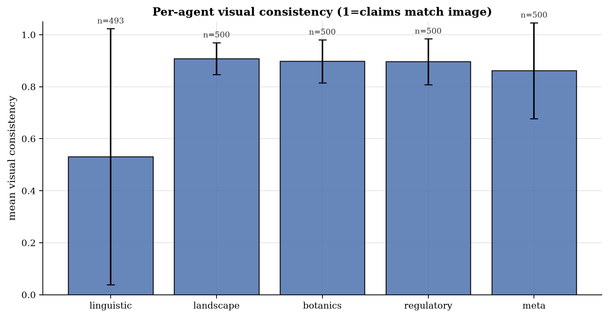
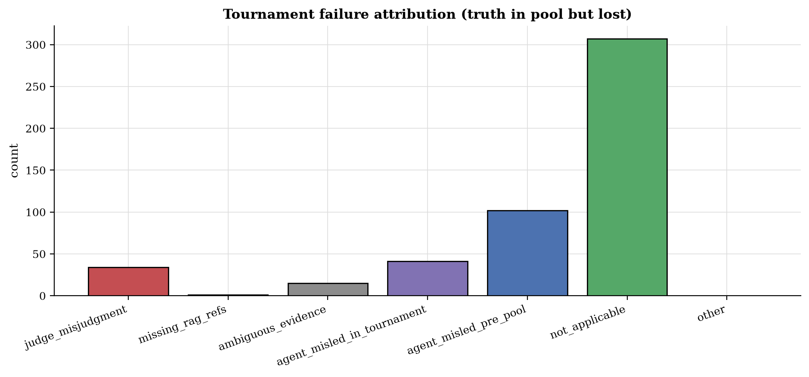

VLM Council Tournament Only Evaluation Report
1. Ground-truth statistics
Headline metrics
| Metric | Value |
|---|---|
| Country accuracy | 67.8% |
| Median haversine | 395 km |
| Mean haversine | 1,412 km |
| N images | 500 |
Geo-spatial bias
- North/south bias: strong north bias (p=0.0073)
- East/west bias: no significant bias (p=0.5408)

Figure: latitude and longitude error distribution.

Figure: bearing of prediction errors.
Top confusion pairs
| Truth | Predicted | Count |
|---|---|---|
| canada | united states | 4 |
| south africa | botswana | 3 |
| south africa | namibia | 3 |
| panama | puerto rico | 3 |
| uruguay | brazil | 3 |
| indonesia | philippines | 2 |
| argentina | mexico | 2 |
| norway | sweden | 2 |
| bolivia | brazil | 2 |
| botswana | namibia | 2 |
| peru | colombia | 2 |
| montenegro | croatia | 2 |
| sweden | finland | 2 |
| indonesia | thailand | 2 |
| russia | ukraine | 2 |
| chile | peru | 2 |
| mexico | thailand | 2 |
| kenya | rwanda | 2 |
| kyrgyzstan | azerbaijan | 1 |
| serbia | bosnia and herzegovina | 1 |
Geographic world maps
Per-country true-positive rate (TPR = correct over truth = country) and false-positive counts. Macro-averaged TPR across countries with truth: 56.2% (91 countries).

Figure: per-country TPR (green) with false-positive outlines (red).

Figure: per-country F1, divergent around the run macro-F1. Green = above average, red = below average.

Figure: per-country error bias (FP over FN). Red = over-predicted, blue = missed.
Per-country breakdown (107 entries)
| Country | n_truth | n_correct | n_predicted | n_false_positive | TPR | PPV |
|---|---|---|---|---|---|---|
| Albania | 2 | 1 | 2 | 1 | 50.0% | 50.0% |
| American Samoa | 1 | 0 | 0 | 0 | 0.0% | n/a |
| Andorra | 2 | 2 | 2 | 0 | 100.0% | 100.0% |
| Argentina | 14 | 8 | 11 | 3 | 57.1% | 72.7% |
| Aruba | 0 | 0 | 1 | 1 | n/a | 0.0% |
| Australia | 19 | 18 | 19 | 1 | 94.7% | 94.7% |
| Austria | 1 | 0 | 1 | 1 | 0.0% | 0.0% |
| Azerbaijan | 0 | 0 | 1 | 1 | n/a | 0.0% |
| Bangladesh | 8 | 6 | 6 | 0 | 75.0% | 100.0% |
| Belgium | 5 | 2 | 3 | 1 | 40.0% | 66.7% |
| Bhutan | 3 | 0 | 0 | 0 | 0.0% | n/a |
| Bolivia | 2 | 0 | 0 | 0 | 0.0% | n/a |
| Bosnia And Herzegovina | 0 | 0 | 2 | 2 | n/a | 0.0% |
| Botswana | 5 | 3 | 6 | 3 | 60.0% | 50.0% |
| Brazil | 26 | 25 | 35 | 10 | 96.2% | 71.4% |
| Bulgaria | 3 | 1 | 3 | 2 | 33.3% | 33.3% |
| Cambodia | 2 | 1 | 3 | 2 | 50.0% | 33.3% |
| Canada | 14 | 10 | 10 | 0 | 71.4% | 100.0% |
| Chile | 6 | 3 | 3 | 0 | 50.0% | 100.0% |
| Colombia | 5 | 2 | 8 | 6 | 40.0% | 25.0% |
| Costa Rica | 0 | 0 | 5 | 5 | n/a | 0.0% |
| Croatia | 2 | 1 | 3 | 2 | 50.0% | 33.3% |
| Curacao | 1 | 0 | 0 | 0 | 0.0% | n/a |
| Cyprus | 0 | 0 | 1 | 1 | n/a | 0.0% |
| Czechia | 4 | 3 | 3 | 0 | 75.0% | 100.0% |
| Denmark | 2 | 2 | 5 | 3 | 100.0% | 40.0% |
| Dominican Republic | 1 | 1 | 4 | 3 | 100.0% | 25.0% |
| Ecuador | 3 | 0 | 0 | 0 | 0.0% | n/a |
| Egypt | 0 | 0 | 1 | 1 | n/a | 0.0% |
| Estonia | 2 | 1 | 2 | 1 | 50.0% | 50.0% |
| Ethiopia | 0 | 0 | 1 | 1 | n/a | 0.0% |
| Finland | 4 | 3 | 5 | 2 | 75.0% | 60.0% |
| France | 10 | 5 | 11 | 6 | 50.0% | 45.5% |
| Georgia | 0 | 0 | 1 | 1 | n/a | 0.0% |
| Germany | 10 | 7 | 7 | 0 | 70.0% | 100.0% |
| Greece | 4 | 3 | 4 | 1 | 75.0% | 75.0% |
| Greenland | 1 | 0 | 0 | 0 | 0.0% | n/a |
| Guam | 1 | 0 | 0 | 0 | 0.0% | n/a |
| Guatemala | 1 | 0 | 1 | 1 | 0.0% | 0.0% |
| Hawaii, Usa | 0 | 0 | 1 | 1 | n/a | 0.0% |
| Hong Kong | 1 | 0 | 0 | 0 | 0.0% | n/a |
| Hungary | 3 | 0 | 1 | 1 | 0.0% | 0.0% |
| Iceland | 2 | 2 | 3 | 1 | 100.0% | 66.7% |
| India | 7 | 5 | 10 | 5 | 71.4% | 50.0% |
| Indonesia | 18 | 11 | 12 | 1 | 61.1% | 91.7% |
| Iran | 0 | 0 | 1 | 1 | n/a | 0.0% |
| Iraq | 0 | 0 | 1 | 1 | n/a | 0.0% |
| Ireland | 1 | 1 | 1 | 0 | 100.0% | 100.0% |
| Italy | 4 | 3 | 3 | 0 | 75.0% | 100.0% |
| Jamaica | 0 | 0 | 2 | 2 | n/a | 0.0% |
| Japan | 22 | 22 | 22 | 0 | 100.0% | 100.0% |
| Jordan | 3 | 3 | 3 | 0 | 100.0% | 100.0% |
| Kazakhstan | 3 | 1 | 1 | 0 | 33.3% | 100.0% |
| Kenya | 8 | 1 | 1 | 0 | 12.5% | 100.0% |
| Kyrgyzstan | 1 | 0 | 0 | 0 | 0.0% | n/a |
| Laos | 1 | 1 | 1 | 0 | 100.0% | 100.0% |
| Latvia | 3 | 1 | 1 | 0 | 33.3% | 100.0% |
| Lebanon | 1 | 0 | 0 | 0 | 0.0% | n/a |
| Lesotho | 1 | 1 | 1 | 0 | 100.0% | 100.0% |
| Lithuania | 2 | 2 | 3 | 1 | 100.0% | 66.7% |
| Luxembourg | 1 | 0 | 0 | 0 | 0.0% | n/a |
| Malaysia | 5 | 4 | 5 | 1 | 80.0% | 80.0% |
| Malta | 1 | 1 | 1 | 0 | 100.0% | 100.0% |
| Mexico | 12 | 6 | 11 | 5 | 50.0% | 54.5% |
| Monaco | 1 | 1 | 1 | 0 | 100.0% | 100.0% |
| Mongolia | 3 | 3 | 4 | 1 | 100.0% | 75.0% |
| Montenegro | 6 | 1 | 1 | 0 | 16.7% | 100.0% |
| Namibia | 0 | 0 | 6 | 6 | n/a | 0.0% |
| Nepal | 0 | 0 | 1 | 1 | n/a | 0.0% |
| Netherlands | 5 | 5 | 7 | 2 | 100.0% | 71.4% |
| New Zealand | 9 | 8 | 9 | 1 | 88.9% | 88.9% |
| Nigeria | 2 | 1 | 1 | 0 | 50.0% | 100.0% |
| North Macedonia | 1 | 0 | 0 | 0 | 0.0% | n/a |
| Northern Mariana Islands | 1 | 0 | 0 | 0 | 0.0% | n/a |
| Norway | 8 | 5 | 6 | 1 | 62.5% | 83.3% |
| Oman | 3 | 1 | 2 | 1 | 33.3% | 50.0% |
| Panama | 8 | 0 | 1 | 1 | 0.0% | 0.0% |
| Peru | 7 | 3 | 5 | 2 | 42.9% | 60.0% |
| Philippines | 11 | 9 | 12 | 3 | 81.8% | 75.0% |
| Poland | 5 | 3 | 7 | 4 | 60.0% | 42.9% |
| Portugal | 6 | 5 | 6 | 1 | 83.3% | 83.3% |
| Puerto Rico | 0 | 0 | 5 | 5 | n/a | 0.0% |
| Qatar | 2 | 1 | 1 | 0 | 50.0% | 100.0% |
| Romania | 2 | 1 | 4 | 3 | 50.0% | 25.0% |
| Russia | 16 | 13 | 18 | 5 | 81.2% | 72.2% |
| Rwanda | 1 | 1 | 3 | 2 | 100.0% | 33.3% |
| Saudi Arabia | 0 | 0 | 2 | 2 | n/a | 0.0% |
| Senegal | 2 | 2 | 5 | 3 | 100.0% | 40.0% |
| Serbia | 2 | 0 | 1 | 1 | 0.0% | 0.0% |
| Slovakia | 1 | 0 | 0 | 0 | 0.0% | n/a |
| South Africa | 16 | 7 | 9 | 2 | 43.8% | 77.8% |
| South Korea | 7 | 7 | 7 | 0 | 100.0% | 100.0% |
| Spain | 9 | 9 | 11 | 2 | 100.0% | 81.8% |
| Sri Lanka | 6 | 3 | 5 | 2 | 50.0% | 60.0% |
| Sweden | 5 | 1 | 4 | 3 | 20.0% | 25.0% |
| Switzerland | 4 | 2 | 2 | 0 | 50.0% | 100.0% |
| Taiwan | 3 | 3 | 5 | 2 | 100.0% | 60.0% |
| Thailand | 12 | 12 | 19 | 7 | 100.0% | 63.2% |
| Tunisia | 4 | 3 | 3 | 0 | 75.0% | 100.0% |
| Turkey | 10 | 8 | 9 | 1 | 80.0% | 88.9% |
| Uganda | 2 | 2 | 3 | 1 | 100.0% | 66.7% |
| Ukraine | 7 | 5 | 9 | 4 | 71.4% | 55.6% |
| United Arab Emirates | 3 | 2 | 2 | 0 | 66.7% | 100.0% |
| United Kingdom | 6 | 6 | 10 | 4 | 100.0% | 60.0% |
| United States | 32 | 30 | 36 | 6 | 93.8% | 83.3% |
| Uruguay | 6 | 2 | 2 | 0 | 33.3% | 100.0% |
| Vietnam | 2 | 1 | 1 | 0 | 50.0% | 100.0% |
Confidence calibration
Each specialist annotates every candidate with a confidence label (high / medium / low / speculative). When an agent assigns label X to a country, in what fraction of those (image, country) pairs was that country the ground truth?
| Agent | high (n) | medium (n) | low (n) | speculative (n) |
|---|---|---|---|---|
| linguistic | 83.0% (94) | 7.9% (215) | 5.4% (56) | n/a (0) |
| landscape | 58.2% (545) | 9.7% (801) | 2.9% (409) | 0.2% (445) |
| botanics | 56.4% (367) | 21.9% (834) | 1.4% (648) | 0.6% (326) |
| regulatory | 87.8% (131) | 38.8% (544) | 11.4% (667) | 1.4% (629) |
| meta | 83.4% (217) | 27.2% (668) | 6.0% (532) | 1.6% (322) |
| average | 66.3% (1354) | 21.9% (3062) | 5.7% (2312) | 1.0% (1722) |

Figure: per-label hit-rate. A well-calibrated agent shows monotonically falling bars (high, medium, low, speculative).
| Agent | n | Brier | ECE |
|---|---|---|---|
| linguistic | 107 | 0.136 | 0.053 |
| landscape | 500 | 0.218 | 0.175 |
| botanics | 500 | 0.221 | 0.107 |
| regulatory | 500 | 0.197 | 0.038 |
| meta | 500 | 0.209 | 0.098 |
| average | 2107 | 0.207 | 0.090 |
2. Approach dynamics
The tournament only pipeline runs five independent agent assessments into a candidate pool, seeds the top four of that pool into a bracket (seed 0 vs seed 3, seed 1 vs seed 2, then a final), and returns the champion as the answer. There is no region gate, so these dynamics cover the candidate pool, the pool to bracket seeding step, the bracket matches and the ground truth survival ladder.
Candidate pool to bracket seeding
| Metric | Value |
|---|---|
| Mean pool size | 5.75 |
| Max pool size | 6 |
| Mean bracket size | 4.00 |
| Mean pool to bracket slack | 1.75 (max 2) |
| Bracket equals pool top 4 (as a set) | 204 (40.8%) |
| Pool larger than 4 (some pool entries dropped) | 485 (97.0%) |
Seed 0 origin (which signal produces the top seed)
Across 500 images with a bracket, the seed 0 country matches the initial plurality (at least 2 of 5 agents) 93.4% of the time (n=467).
| Agent | Seed 0 matches this agent top pick |
|---|---|
| linguistic | 95 (19.0%) |
| landscape | 460 (92.0%) |
| botanics | 442 (88.4%) |
| regulatory | 432 (86.4%) |
| meta | 416 (83.2%) |
Tournament matches
Across 1500 bracket matches: judge agrees with the specialists 97.9% (n=1469), disagrees 2.1% (n=31), and a lower seed wins (upset) 5.5% (n=82).
| Original seed | Champions | Share |
|---|---|---|
| 0 | 492 | 98.4% |
| 1 | 4 | 0.8% |
| 2 | 4 | 0.8% |
Initial plurality vs champion (ratify or revise)
Of 498 images with an initial plurality (at least 2 of 5 agents naming the same country), the tournament champion equals that plurality 93.0% (n=463) and revises it 7.0% (n=35). 2 images had no initial plurality.
Ground truth survival ladder
Each gate can drop the ground truth country, and no downstream gate can recover it. Rates are over 500 images with ground truth.
| Gate | Survived | Rate |
|---|---|---|
| Ground truth in candidate pool | 429 | 85.8% |
| Ground truth in bracket (top 4 seeded) | 418 | 83.6% |
| Ground truth at seed 0 | 336 | 67.2% |
| Ground truth reached the final | 384 | 76.8% |
| Ground truth won the tournament | 339 | 67.8% |
Gate to gate survival of ground truth: in pool to in bracket 97.4%, in bracket to reached final 91.9%, reached final to won tournament 88.3%.
Seed fidelity (does the tournament correct mis seedings?)
Over the 418 images where the ground truth reached the bracket, the tournament picks it 81.1% of the time (n=339).
| Ground truth seed | n | Won | Win rate |
|---|---|---|---|
| 0 | 336 | 334 | 99.4% |
| 1 | 40 | 1 | 2.5% |
| 2 | 27 | 4 | 14.8% |
| 3 | 15 | 0 | 0.0% |
Per-agent initial round
In tournament only there is no per-agent country reassessment, so each agent contributes only its initial top pick.
| Agent | n | Top-1 | Top-3 | Coverage |
|---|---|---|---|---|
| linguistic | 107 | 78.5% | 86.0% | 91.6% |
| landscape | 500 | 64.8% | 79.6% | 81.4% |
| botanics | 500 | 63.4% | 78.4% | 80.0% |
| regulatory | 500 | 64.8% | 79.4% | 82.0% |
| meta | 500 | 62.6% | 78.2% | 79.8% |

Figure: per-agent top-1 accuracy.
3. LLM-as-judge verdicts
Verdicts: 500 / 500. Constructive synthesis: 93.2% (n=500)
Per-agent quantitative scores
| Agent | n | Role adher. | Hallucination (lower is better) | Visual cons. (higher is better) | Calibration (higher is better) |
|---|---|---|---|---|---|
| linguistic | 107 | 100.0% | 0.01 ± 0.06 | 0.53 ± 0.49 | 0.34 ± 0.35 |
| landscape | 500 | 100.0% | 0.01 ± 0.07 | 0.91 ± 0.06 | 0.69 ± 0.28 |
| botanics | 500 | 100.0% | 0.02 ± 0.09 | 0.90 ± 0.08 | 0.65 ± 0.27 |
| regulatory | 500 | 100.0% | 0.01 ± 0.08 | 0.90 ± 0.09 | 0.63 ± 0.26 |
| meta | 500 | 100.0% | 0.06 ± 0.20 | 0.86 ± 0.18 | 0.66 ± 0.32 |

Figure: per-agent role adherence rate.

Figure: per-agent mean hallucination score (0 = clean, 1 = severe).

Figure: per-agent mean visual consistency.
Tournament failure attribution
For matches where the truth was in the candidate pool but did not win, the judge classifies why. Counterfactual winnable rate: 19.2% (193 attributable losses).
| Failure reason | Count |
|---|---|
| agent_misled_in_tournament | 41 |
| not_applicable | 307 |
| ambiguous_evidence | 15 |
| judge_misjudgment | 34 |
| agent_misled_pre_pool | 102 |
| missing_rag_refs | 1 |

Figure: tournament failure attribution histogram.
Failure examples (20)
1NJsXTxIF9GGMDxC_1, agent_misled_in_tournament (lost to Kazakhstan)
Round: semi-2, Counterfactual winnable: no
The landscape and meta agents assigned 'neutral' or 'support' to Kyrgyzstan but 'strongly_support' to Azerbaijan. Specifically, the landscape agent contradicted Kyrgyzstan based on terrain flatness, and the meta agent downgraded Kyrgyzstan based on the totem. This caused the tournament judge to eliminate Kyrgyzstan in the semi-finals against Kazakhstan, preventing it from ever facing Azerbaijan.
1NJsXTxIF9GGMDxC_3, ambiguous_evidence (lost to Bosnia and Herzegovina)
Round: final, Counterfactual winnable: no
The visual evidence (socialist-era apartment blocks, specific balcony railings, street lamps) is highly characteristic of the former Yugoslavia and is shared by both Serbia and Bosnia and Herzegovina. The agents and tournament judge could not distinguish between the two based on the available visual cues.
3I4ZtihbhZy5qZzQ_1, judge_misjudgment (lost to India)
Round: final, Counterfactual winnable: yes
The final match between India and Bangladesh was decided by the 'meta' agent's claim that camera artifacts and utility pole styles were 'more characteristic' of India. These features are visually identical in rural West Bengal (India) and Bangladesh. The judge misjudged the evidence by treating shared regional features as unique differentiators, leading to a wrong conclusion despite the truth being in the pool.
3I4ZtihbhZy5qZzQ_2, agent_misled_pre_pool (lost to n/a)
Round: n/a, Counterfactual winnable: no
3I4ZtihbhZy5qZzQ_4, agent_misled_pre_pool (lost to n/a)
Round: n/a, Counterfactual winnable: no
3I4ZtihbhZy5qZzQ_5, judge_misjudgment (lost to Ecuador)
Round: semi-2, Counterfactual winnable: yes
The judge incorrectly favored Ecuador over Panama in the semi-final. The visual evidence (concrete walls, corrugated roofs, flat terrain) is equally or more consistent with Panama. The judge's reasoning relied on 'Andean urban infrastructure' which is a misinterpretation of the flat, lowland tropical environment shown in the image.
3OuVMcpGjmm0tVfG_1, judge_misjudgment (lost to Philippines)
Round: final, Counterfactual winnable: yes
The landscape specialist assigned 'strongly_support' to the Philippines based on 'volcanic grey rocky embankments', treating a shared regional feature (volcanic soil/rock) as a unique differentiator. The judge accepted this flawed reasoning in the final match, despite Indonesia having comparable support. The visual evidence (volcanic rock) is ambiguous between the two archipelagos, but the judge failed to recognize this ambiguity and incorrectly favored the Philippines.
3OuVMcpGjmm0tVfG_5, agent_misled_pre_pool (lost to n/a)
Round: n/a, Counterfactual winnable: no
The correct country (Argentina) was not included in the candidate pool. The specialists failed to nominate it, likely due to a bias towards North/Central American infrastructure and vegetation patterns (e.g., confusing the local palm species with Mexican Fan Palms).
3uP6lYo9pzx5Q0km_2, ambiguous_evidence (lost to Sweden)
Round: final, Counterfactual winnable: no
The visual evidence (rural road, birch/pine forest, white wooden house) is nearly identical in Sweden and Norway. The agents and tournament judge correctly identified the Fennoscandian context but could not distinguish between the two based on the available visual cues.
3uP6lYo9pzx5Q0km_3, judge_misjudgment (lost to Czech Republic)
Round: final, Counterfactual winnable: yes
The specialists (meta and regulatory) correctly identified the posts as Polish and gave high confidence to Poland. The judge ignored this strong specialist signal and the RAG evidence for Poland, instead relying on a flawed RAG reference for the Czech Republic to make the final decision.
3uP6lYo9pzx5Q0km_5, agent_misled_pre_pool (lost to n/a)
Round: n/a, Counterfactual winnable: no
The ground truth (Montenegro) was not included in the candidate pool. The agents failed to nominate it, likely because the visual evidence (rural road, forest, rusted guardrail) is generic to the Balkans and did not trigger a specific Montenegro hypothesis in any specialist.
4UvmdTHySo6AXW4M_1, agent_misled_pre_pool (lost to n/a)
Round: n/a, Counterfactual winnable: no
The ground truth (Luxembourg) was not included in the candidate pool. The landscape and botanics agents failed to nominate it, likely because the visual features (green pastures, bare trees, narrow road) are generic to Western Europe and did not trigger a specific match for Luxembourg over the UK or Ireland.
4UvmdTHySo6AXW4M_3, judge_misjudgment (lost to Russia)
Round: semi-1, Counterfactual winnable: yes
The judge accepted the 'absence of bollards' argument as a strong differentiator for Russia over Poland. However, the absence of evidence is not evidence of absence; rural Polish roads often lack these markers. The judge failed to weigh the positive visual evidence (road width, asphalt texture, truck style) which was actually consistent with Poland, and instead relied on a negative inference that was not unique to Russia.
4UvmdTHySo6AXW4M_4, agent_misled_in_tournament (lost to South Africa)
Round: final, Counterfactual winnable: no
The meta agent hallucinated that the utility poles were concrete and tapered (claiming they were 'concrete poles with a specific tapered design'), whereas the image clearly shows wooden poles. This hallucinated evidence was used to strongly support South Africa and contradict the USA, leading the tournament to reject the correct answer.
4UvmdTHySo6AXW4M_5, agent_misled_pre_pool (lost to n/a)
Round: n/a, Counterfactual winnable: no
The ground truth (Cambodia) was not included in the candidate pool. The landscape and botanics agents incorrectly identified the scene as Northern India/Pakistan based on the Indo-Gangetic plain analogy, and the meta agent failed to identify the Southeast Asian context, instead favoring India based on camera artifacts.
56Q4T4rpv9O9sCpP_4, agent_misled_pre_pool (lost to n/a)
Round: n/a, Counterfactual winnable: no
56Q4T4rpv9O9sCpP_5, judge_misjudgment (lost to Botswana)
Round: final, Counterfactual winnable: yes
The meta agent hallucinated a 'camera rig artifact' (blur/halo) to support Botswana. The judge accepted this hallucination as 'strong evidence' and used it to override the visual evidence (road markings) that actually pointed to South Africa/Namibia. The judge failed to verify the existence of the artifact in the image.
5GS2RPgTrf85UZM5_1, ambiguous_evidence (lost to Romania)
Round: final, Counterfactual winnable: no
The visual evidence (concrete poles, red roofs, curbs) is genuinely ambiguous between Bulgaria and Romania. The agents and tournament judge relied on 'meta' features that are not unique to Romania, leading to a defensible but incorrect choice.
5GS2RPgTrf85UZM5_3, agent_misled_pre_pool (lost to n/a)
Round: n/a, Counterfactual winnable: no
Bolivia was not included in the candidate pool. The landscape, botanics, and regulatory agents all prioritized Brazil based on red soil and tropical vegetation, failing to consider Bolivia despite the visual evidence being highly consistent with the Bolivian interior (e.g., Santa Cruz/Chiquitos region).
5GS2RPgTrf85UZM5_5, agent_misled_pre_pool (lost to n/a)
Round: n/a, Counterfactual winnable: no
Hallucination examples
linguistic, 4 flagged claims
| Image | Score | Hallucinated claim |
|---|---|---|
| HF1MKwIFNCNb4FdM_3 | 0.75 | The text 'Vilabonita' on the billboard is a specific residential project name common in Colombia. |
| HLDekf7z49ovS9Y8_1 | 0.50 | The graffiti 'PIRAI CAMEO' contains words consistent with Portuguese. |
| oIqmyQzBGtaIeI84_4 | 0.75 | The text 'SOLGAS' refers to a gas distribution company that operates primarily in Colombia. |
| z2mhsiTu4DYWixQf_5 | 0.50 | The sign on the left contains the word 'سورية' (Syria/Syrian) |
landscape, 5 flagged claims
| Image | Score | Hallucinated claim |
|---|---|---|
| 74bPHM081cMUaNKT_4 | 0.75 | The landscape specialist claims 'light-colored, weathered sedimentary rock cuts on the right' are 'highly characteristic of the Colombian interior' and 'specific weathered sedimentary rock cuts'. The image shows a generic dirt/gravel embankment with some exposed subsoil, not distinct sedimentary rock cuts. |
| 74bPHM081cMUaNKT_4 | 0.75 | The landscape specialist claims the 'specific road marking style... is very common in the Colombian highlands'. The yellow center line is a generic international standard, not specific to Colombia. |
| 9lNwy1vjD53PTSwt_2 | 0.20 | claimed 'specific species of deciduous trees' — the prominent trees are clearly Eucalyptus (evergreen), not deciduous. |
| HLDekf7z49ovS9Y8_1 | 0.50 | The combination of reddish-brown sandy soil... is highly characteristic of Brazil. |
| KWr0ySMIaUQRvikA_3 | 0.75 | landscape agent: 'The combination of sandy red-brown soil and dense, low-lying scrubby green vegetation is highly characteristic of the Sahelian transition zone.' (The image shows a Chaco landscape, not the Sahel; the agents hallucinated the Sahel context.) |
botanics, 5 flagged claims
| Image | Score | Hallucinated claim |
|---|---|---|
| 4UvmdTHySo6AXW4M_4 | 0.50 | claimed 'Saguaro' is a common North American desert indicator (it is not native to the region shown) |
| 4UvmdTHySo6AXW4M_4 | 0.50 | claimed 'Creosote bush' is a distinct visual indicator present/absent in the scrub |
| 6ypQOh9cOoE7WaWH_3 | 0.20 | claimed 'eucalyptus globulus (introduced)' visible in background — image shows generic montane forest/scrub, no distinct eucalyptus trees visible |
| 74bPHM081cMUaNKT_4 | 0.25 | The botanics agent claims 'Acacia-like trees' are visible. The trees in the image are generic broadleaf/scrub; identifying them as Acacia is a weak inference, though not a total fabrication. |
| 9lNwy1vjD53PTSwt_2 | 0.20 | claimed 'Platanus orientalis (Oriental Plane)' — the trees visible are Eucalyptus (tall, smooth bark, drooping leaves), not Plane trees. |
regulatory, 5 flagged claims
| Image | Score | Hallucinated claim |
|---|---|---|
| HF1MKwIFNCNb4FdM_3 | 0.50 | The billboard text 'Vilabonita' and the general style of the utility poles and street lighting are consistent with Colombian infrastructure. |
| HLDekf7z49ovS9Y8_1 | 0.50 | The combination of unpaved dirt roads... is very common in Brazilian outskirts. |
| JnTw9kl2nWPFaoUg_5 | 0.50 | claimed 'white Toyota Hiace commuter vans with specific colorful decals... are extremely characteristic of Ugandan matatus' (decals are actually a Kenyan hallmark; Uganda uses plain or differently marked vans). |
| KWr0ySMIaUQRvikA_3 | 0.50 | regulatory agent: 'The combination of narrow asphalt, sandy shoulders, and specific wooden utility pole cross-arm style is common in rural Botswana.' (Speculative hallucination of infrastructure style.) |
| QTmrnxW99iiyS2xS_3 | 0.50 | The double yellow center lines are a quintessential road marking for the USA, whereas Turkey typically uses white lines for road separation. |
meta, 5 flagged claims
| Image | Score | Hallucinated claim |
|---|---|---|
| 4UvmdTHySo6AXW4M_4 | 0.75 | claimed 'concrete poles with a specific tapered design' are visible (poles are clearly wooden) |
| 4UvmdTHySo6AXW4M_4 | 0.75 | claimed 'concrete poles' are standard in South Africa (they are wooden in the image) |
| 56Q4T4rpv9O9sCpP_2 | 0.75 | The utility pole is a classic South African design: a concrete pole with a specific T-shaped cross-arm and insulator configuration common in rural areas. |
| 56Q4T4rpv9O9sCpP_5 | 1.00 | The image shows a very distinct Google Street View camera artifact: the 'halo' or blur at the bottom of the frame is characteristic of the camera rig used in Botswana's coverage. |
| 56Q4T4rpv9O9sCpP_5 | 1.00 | the specific camera blur at the bottom is less common for the standard South African coverage compared to Botswana. |